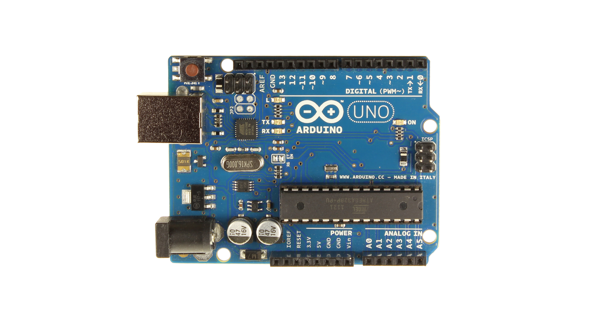
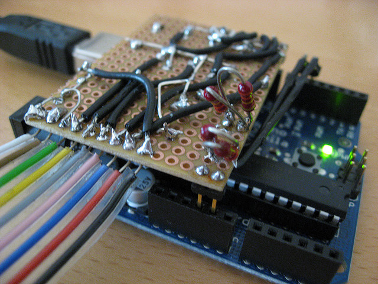
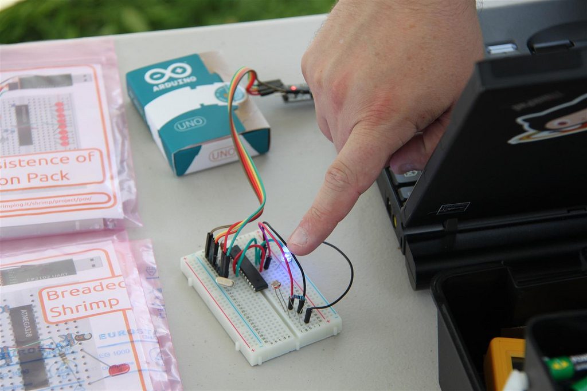

Arduino workshop voor beginners
Arduino Day 2014
Kenny Rasschaert, Inuits
Arduino =
open hardware + open software
Hardware

Foto: Tom Igoe (CC BY-NC-SA 2.0)
Een Arduino bordje in detail
Er zijn ook grotere

...en kleinere

Arduino + breadboard

Foto: Flickr gebruiker Abuakel (CC BY-NC-SA 2.0)
Arduino + shield(s)

Foto: John Boxall (CC BY-NC-SA 2.0)
Solderen
Foto: Mario Klingemann (CC BY-NC-SA 2.0)
Shrimp
Foto: Les Pounder (CC BY-NC-SA 2.0)
Software

Foto: W.Rebel, via Wikimedia Commons (CC BY-SA 3.0)
Arduino IDE

Screenshot: Wikipedia contributor Lemio (CC BY-SA 3.0)
Command line - Ino

Minimaal programma
void setup() {
}
void loop() {
}
Digitale output
Blink
/*
Blink
Turns on an LED on for one second, then off for one second, repeatedly.
This example code is in the public domain.
*/
// Pin 13 has an LED connected on most Arduino boards.
// give it a name:
int led = 13;
// the setup routine runs once when you press reset:
void setup() {
// initialize the digital pin as an output.
pinMode(led, OUTPUT);
}
// the loop routine runs over and over again forever:
void loop() {
digitalWrite(led, HIGH); // turn the LED on (HIGH is the voltage level)
delay(1000); // wait for a second
digitalWrite(led, LOW); // turn the LED off by making the voltage LOW
delay(1000); // wait for a second
}
Digitale output
op een ander ledje

Wet van Ohm

Kleurcodes weerstanden

Foto: tinkerlog.com (CC BY-NC-SA 2.0)
Digitale input
Drukknop

Foto: Flickr gebruiker Arduinolabs (CC BY-NC-SA 2.0)
Digitale input
Drukknop op een breadboard